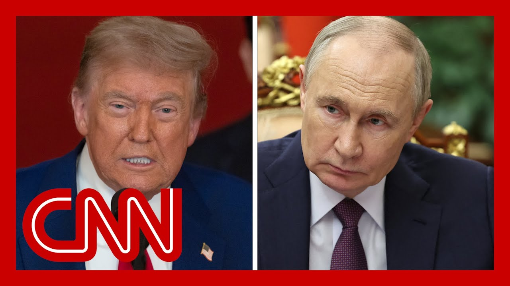

【CNN News 20250704 俄罗斯不会放弃在乌克兰的目标，普京在通话中告诉特朗普】
Summary: President Trump and Vladimir Putin discussed Ukraine and Iran in a nearly hour-long call, with Putin stating Russia would not retreat from its war goals in Ukraine. The White House provided minimal details, while the Kremlin emphasized continued bilateral talks but no progress toward ending the conflict. The call did not address the U.S. pause on weapons shipments to Ukraine.
摘要： 特朗普总统与普京在近一小时的电话中讨论了乌克兰和伊朗问题，普京表示俄罗斯不会放弃在乌克兰的战争目标。白宫未透露细节，而克里姆林宫强调将继续双边谈判，但冲突未现解决进展。通话未提及美国暂停对乌武器援助。

⏱️ Estimated Reading Time: 14 min
📚 四级生词 📚 六级生词 📚 雅思生词 📚 托福生词 📚 专八生词 📚 SAT生词 📚 考研生词 📚 GRE生词 📚 高考生词 📚 其它生词生词
Breaking news on CNN, President Trump has wrapped up a nearly hour-long call with Russian President Vladimir Putin.
CNN突发新闻，特朗普总统结束了与俄罗斯总统普京近一小时的电话交谈。
According to Russian state media, TASS, the two leaders discussed Ukraine, Iran, and other issues on Ukraine.
据俄罗斯官方媒体塔斯社报道，两位领导人讨论了乌克兰、伊朗及其他相关问题。
A Kremlin aide said that President Putin told President Trump that Russia would not back down from its war goals in Ukraine.
克里姆林宫助手称，普京总统告诉特朗普，俄罗斯不会放弃在乌克兰的战争目标。
Let's go to senior White House reporter Kevin Liptak with more.
接下来请白宫资深记者凯文·利普塔克带来更多细节。
Kevin, what more are we learning about what happened during this call?
凯文，关于这次通话我们还了解到哪些内容？
The White House saying that the call has ended, but that's about all they're saying.
白宫仅表示通话已结束，未透露其他信息。
We're getting most of the details now from the Kremlin side of things.
目前大部分细节来自克里姆林宫方面。
The Kremlin saying that Putin made clear to President Trump that Russia would not back off of its war aims in Ukraine, while at the same time saying that they would continue these bilateral discussions with Ukraine about potentially bringing this war to an end.
克里姆林宫称，普京向特朗普明确表示俄罗斯不会放弃在乌目标，同时将继续与乌克兰进行双边谈判以寻求结束战争。
So I think if you're President Trump going into this call, very much hoping to make progress on bringing the Ukraine conflict to an end.
因此，若特朗普总统此次通话旨在推动乌克兰冲突解决——
It's not clear, at least from the Kremlin readout, that he had a great deal of success on that front, but clearly trying to keep open these channels of communication as he works to resolve that conflict.
从克里姆林宫简报看，他未取得重大进展，但显然试图保持沟通渠道开放以解决冲突。
One interesting point that the Kremlin made was that the two men did not discuss this decision on the part of the Trump administration this week to put a halt on weapons shipments to Ukraine.
值得注意的是，克里姆林宫称双方未讨论特朗普政府本周暂停对乌武器援助的决定。
The Trump administration had said that they were concerned about dwindling U.S. stockpiles and put those weapons on hold.
特朗普政府表示此举是因担忧美国库存减少。
That topic did not come up in these two men's conversations, according to Moscow.
据莫斯科称，该话题未在通话中被提及。
But it will be interesting to see if and when President Trump describes this particular conversation.
但值得关注特朗普总统会否及何时描述这次通话。
You know, the last time that he was talking in public about Putin was at the NATO summit last week, and he said that he thought his Russian counterpart was misguided in this conflict, that he wanted to find a way to bring this war to an end, but that he didn't necessarily know how to do it.
他上周在北约峰会公开谈及普京时称，认为俄方在冲突中误入歧途，希望结束战争但不知具体方法。
It will be interesting to see if this conversation changed the president's perspective in any way.
此次通话是否改变特朗普的观点值得关注。
It did come amid this flurry of diplomacy between the West and with Moscow.
此次通话正值西方与莫斯科外交密集之际。
The French president, Vladimir, the French president, Emmanuel Macron, spoke to Putin earlier this week for the first time in three years.
法国总统马克龙本周与普京进行了三年来首次通话。
And so you do see sort of the diplomatic gears starting to grind, but at least based on the Kremlin's description of this call, it doesn't appear as if the war in Ukraine is coming any closer to a resolution.
可见外交齿轮开始转动，但据克里姆林宫描述，乌克兰战争仍未现解决迹象。
The president just did wrap up his phone call with Russian President Vladimir Putin.
总统刚结束与俄罗斯总统普京的通话。
I want to get straight to our terrific reporters.
接下来请我们出色的记者团队带来分析。
Kristen Holmes is still here, Natasha Bertrand as well.
克里斯滕·霍姆斯和娜塔莎·伯特兰仍在现场。
And we have joining us our one and only Jill Doherty, who has been covering all things Russia for a very long time.
还有长期报道俄罗斯事务的吉尔·多尔蒂。
Kristen, I want to start with you.
克里斯滕，请先分享你的报道。
You have been doing reporting.
你一直在进行相关报道。
What are you hearing?
了解到哪些信息？
Yeah, so the call is over.
是的，通话已结束。
It started around 10 a.m.
约上午10点开始。
It lasted for nearly an hour, and we still don't have a readout from President Trump.
持续近一小时，目前尚未收到特朗普总统的简报。
And just, you know, when we look at this White House, they're usually waiting for the principal, President Trump, to post himself instead of a traditional White House readout of how the call went.
白宫通常等待特朗普本人而非传统形式发布通话内容。
So we'll see if he puts something on True Social.
需关注他是否在Truth Social上发文。
Two things to keep in mind about why this phone call is so critical at this time.
此次通话关键性体现于两点。
One, it comes right after we reported that the Pentagon paused some of the military support ammunition that had been sending to Ukraine, something that the Russians celebrated.
一是紧随五角大楼暂停对乌军援（俄方对此表示欢迎）的报道。
Two, it also comes after we heard President Trump in his most candid moments at NATO talking about the difficulties of working with Russian President Vladimir Putin.
二是特朗普总统在北约峰会坦言与普京合作的困难。
He said for the first time that it was harder than he thought to end the conflict in Ukraine.
他首次表示结束乌克兰冲突比预想更难。
He said for the first time that he believed it was possible that Putin had ambitions of obtaining more land and more, acquiring more property, I guess is a better way to put it, but then just Ukraine, that it wasn't going to stop.
并首次认为普京可能怀有获取更多领土的野心，不限于乌克兰。
And he said that he's been very difficult to work with, that Putin had been more difficult to work with than he thought.
他还称普京比预想更难合作。
It was surprising to him.
这令他意外。
So all of that is in the background of this call with these two leaders.
以上均为此次通话的背景。
And I will note, nearly an hour is a lot different than what we heard last time, which was two and a half hours.
需注意此次近一小时的通话与上次两个半小时形成对比。
Right.
是的。
OK, so you mentioned the reporting that you and other colleagues have about the U.S. pausing some munitions shipments to Ukraine, including air defense missiles.
你与其他同事报道了美国暂停向乌提供防空导弹等军援。
That's according to senior White House officials.
据白宫高级官员透露。
Natasha, I was talking to somebody who is an expert on such things, who was saying, well, why did that happen before the phone call?
娜塔莎，有专家质疑为何此举发生在通话前？
Isn't that giving up some leverage that you might need?
是否放弃了必要筹码？
I mean, obviously there are different ways to negotiate, but it's giving up some leverage with Putin.
谈判方式多样，但这削弱了与普京谈判的筹码。
Like, if you want to get Putin to do something, say, if you do X, then we will pause the munitions.
例如本可以"若俄方采取X行动，则暂停军援"作为条件。
Yeah.
是的。
I mean, this has been really surprising.
此举令人意外。
And it was a decision that was made by the Undersecretary of Defense for Policy, Albert Colby.
由国防部政策副部长阿尔伯特·科尔比作出决定。
And according to the Pentagon, it was done in conjunction with the White House.
五角大楼称该决定与白宫协调。
It was done in conjunction with the Secretary of Defense.
并与国防部长协商。
This was not a unilateral decision that Colby made.
非科尔比单方面决定。
But at the same time, it did seem to kind of directly undercut what President Trump had said just last week about perhaps providing Ukraine with more patriot systems, more patriot interceptors, because he has throughout this conflict demonstrated empathy for the civilians in this war, particularly those in Kiev who are under daily barrages by these Russian missiles and drones.
但这似乎直接削弱了特朗普上周关于向乌提供更多"爱国者"系统的表态——他始终对基辅等受俄导弹袭击的平民展现同情。
And where these patriot interceptors in particular are so, so critical and so needed by the Ukrainian people.
而"爱国者"拦截弹对乌克兰民众至关重要。
And so for them to pause the delivery of a package of patriot interceptor missiles, which again are crucial air defense systems that weren't even allocated by this administration, they were actually allocated by the previous administration and that were not even actually currently in U.S. stockpiles.
暂停交付的这批拦截弹由上届政府批准，且当前并非美国库存——
They were actually taken from defense contractors that were building them, is really kind of baffling, I think, to a lot of people that we've spoken to.
实际取自国防承包商生产线，令许多受访者困惑。
And I think it speaks more broadly to this Pentagon and this administration's desire to say, look, we are now prioritizing the American warfighter.
这反映五角大楼及政府更倾向于优先保障美军需求。
We are now, you know, if you're Elbrus Colby, who's the Undersecretary of Defense for Policy, we are now prioritizing the China theater.
如政策副部长科尔比所言，当前优先关注中国战区。
He's trying to send a message.
意在传递信号。
Right, exactly.
确实如此。
So whether or not the White House is completely happy with this, given that it seems to be a little bit undercutting what President Trump said is another question, because we have seen this Pentagon do things before that the White House has not been fully briefed on.
白宫是否完全满意该决定（因削弱特朗普表态）存疑，此前五角大楼亦有未充分通报白宫的先例。
Jill, we are getting some information coming from the Kremlin.
吉尔，我们正获取克里姆林宫关于此次通话的信息。
Here is their readout of this phone call between Presidents Trump and Putin that they talked about Ukraine and Iran.
简报称两位总统讨论了乌克兰与伊朗问题。
The Kremlin said it was a businesslike call, but that Putin said Russia will not back down from war goals in Ukraine.
克里姆林宫称通话"务实"，但普京表示不会放弃在乌目标。
Well, what's new?
有何新意？
I mean, that is what Putin says.
这正是普京一贯立场。
That's what Putin has been saying for three years.
三年来他始终如此表态。
So it looks as if nothing in this conversation, and again, we have to find out the details, but nothing in this conversation convinced him to stop fighting, you know, go to a ceasefire.
目前看来通话未说服其停火或停止战斗。
I know he does.
据我所知——
And I believe in this conversation, he also said, no, but we are willing to get into negotiations.
他在通话中表示愿继续谈判。
But that, again, is exactly almost verbatim what he said in previous talks.
这与以往表态几乎一字不差。
So I think what's really important about this, and I'm not clear who asked whom to talk, you know, who initiated the call.
关键问题在于谁发起通话——
That would be important.
这点很重要。
Perhaps the others on the panel know.
或许其他嘉宾知情。
But I think this is a really crucial moment, because Russia is pulling out the stops.
当前是关键时刻，俄方正全力推进。
This is their summer offensive, or at least the beginning of the summer offensive.
夏季攻势（或初期）已展开。
They have people masked on the border, ready to go into Ukraine if they haven't gone in already.
边境有伪装部队准备或已进入乌克兰。
And the estimated 100,000 troops, according to CNN, they are going to bring in three times the number of North Korean troops to go into Ukraine and fight.
据CNN估计，10万俄军及三倍数量的朝鲜部队将入乌作战。
This is a very big moment.
局势严峻。
And so I think, you know, there's been some vacillation from President Trump.
特朗普总统态度有所摇摆。
I will, maybe I will give the patriots, no, maybe now, you know, we won't.
如"可能提供爱国者系统"到"暂不提供"的反复。
And these are really important weapons.
这些武器至关重要。
Putin can bleed the Ukrainians dry by simply these massive attacks where the Ukrainians have to burn up all of their defensive weapons.
普京可通过消耗战耗尽乌军防御武器。
And that may be the purpose here.
这或是其目的。
So I don't see any progress.
因此未见进展。
In fact, I think we're regressing.
反而在倒退。
Jill, real quick, you heard Kristen talk about, and we heard the president, President Trump, talk about the fact that he's been surprised at how difficult Vladimir Putin is to work with.
吉尔，特朗普总统对普京的难合作程度表示惊讶——
You have covered Vladimir Putin since the beginning of his time in government.
你自普京执政初期便跟踪报道。
Are you surprised?
你感到意外吗？
No, not at all.
毫不意外。
I mean, Putin has been in power for a quarter century.
普京掌权二十五年。
And before that, he was in the KGB.
此前任职克格勃。
So he knows how to manipulate.
深谙操纵之道。
And in this situation, he has set out something that he wants and he's going to find a way to do it either by force or devious methods or negotiations and pressure and exploiting situations.
当前他目标明确，将通过武力、诡计、谈判、施压及利用局势达成目的。
So, no, I'm not surprised at all.
因此毫不意外。
This is modus operandi.
此为其惯用手法。
All right, Jill, thank you so much for your insights.
感谢吉尔的深刻分析。
It's always great to have them.
你的见解总是极具价值。
Natasha and Kristen as well.
也感谢娜塔莎与克里斯滕。